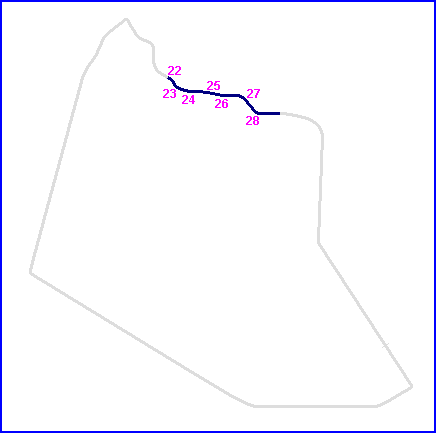
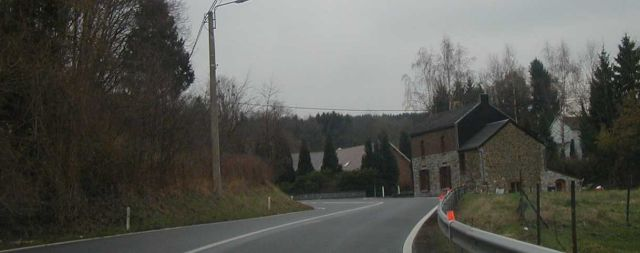
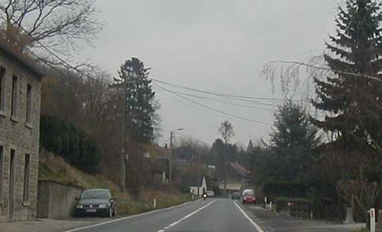
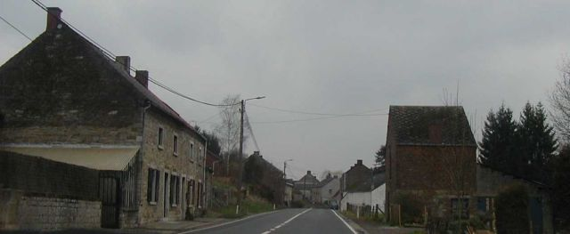
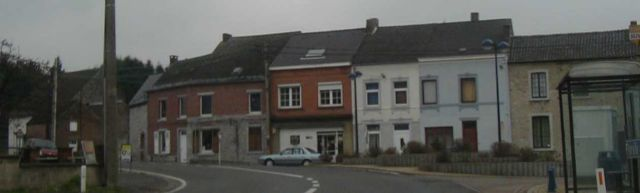
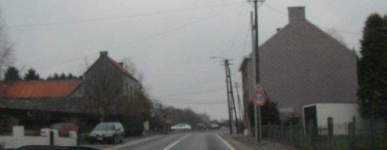
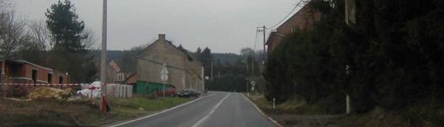
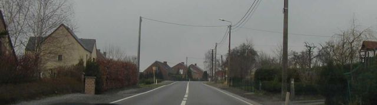

Floreffe - Photo's 22 to 28 (Page 4 of 5)
|| Contents | #01 to #07 | #08 to #14 | #15 to #21 | #22 to #28 | #29 to #35 || Home ||
Numbers on the map indicate where the photos were taken. Click on
the hyperlinks above to view the photographs in that section.

Return to racingcircuits.net's Photo Archive Main Index

22

23

24

25

26

27

28
©Chris Hall. Reproduced here with kind permission.